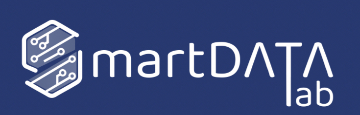
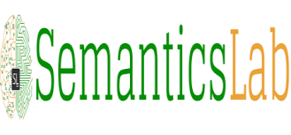
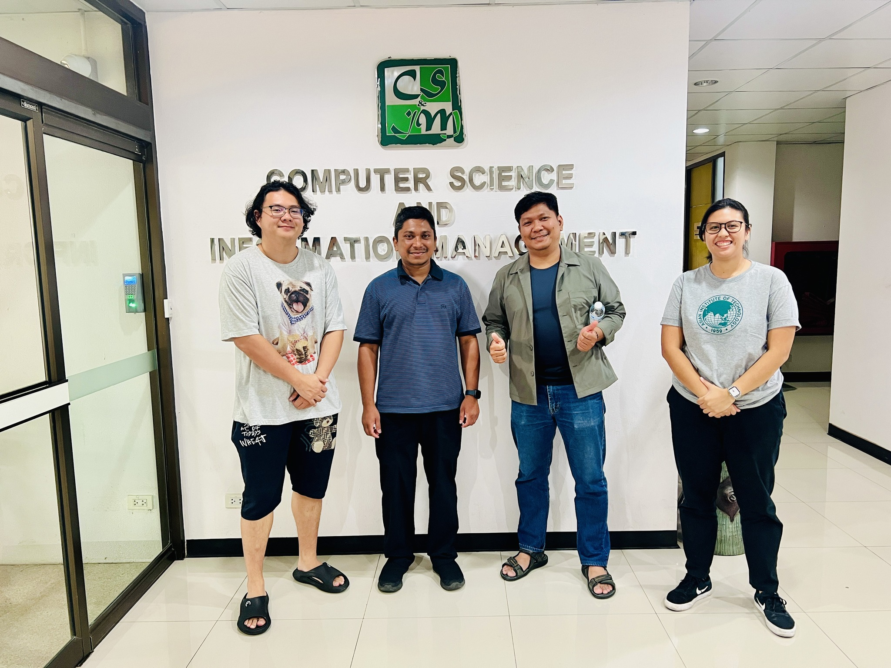
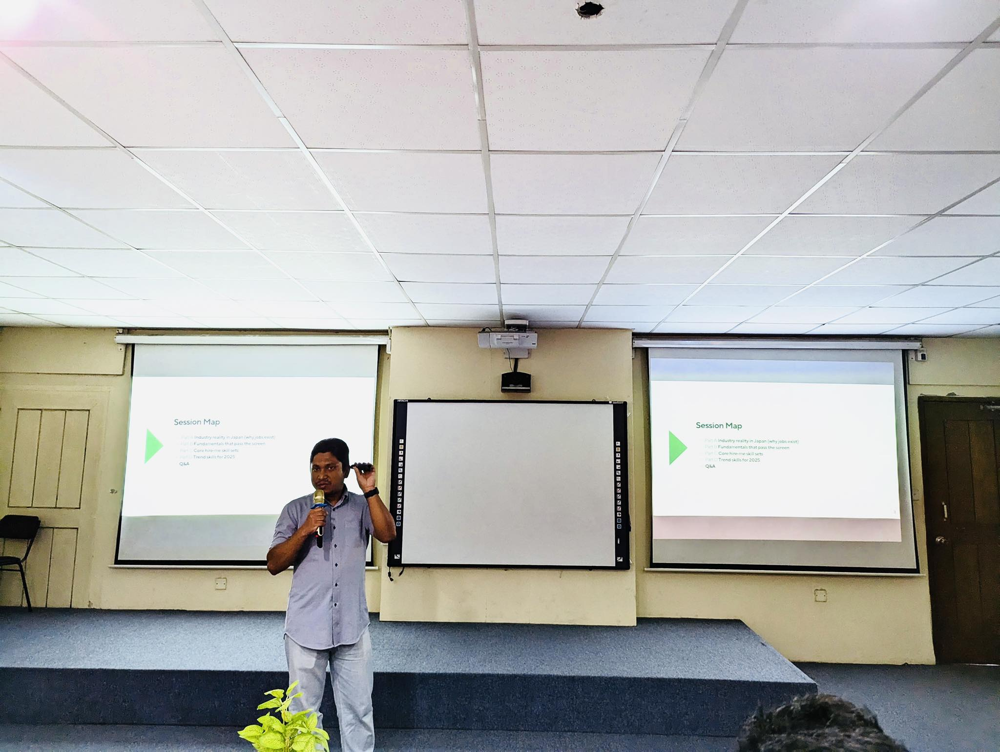
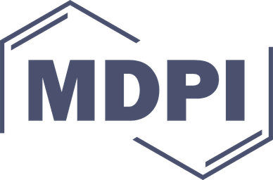

AI ENGINEER & RESEARCHER
Md Shafi Ud Doula
Senior AI R&D Engineer
Deloitte Tohmatsu LLC Tokyo, Japan
Shafi works on document intelligence, generative AI, and vision-language models, with 8+ years of experience taking AI research into enterprise applications.
Document intelligence Generative AI Multimodal learning
About ShafiAbout
Md Shafi Ud Doula is an AI R&D Engineer with over 8 years of professional experience spanning Document Intelligence, Payment Automation, and Digital Transformation. His work sits at the intersection of Computer Vision, Natural Language Processing, Generative AI, and Vision-Language Models, backed by hands-on cloud expertise on AWS and GCP.
Currently based in Tokyo, Japan, he leads GenAI, Agentic AI, and Foundation Model solutions for enterprise clients across healthcare, telecommunications, and insurance domains.
Education
M.Eng. in Data Science & AI
Asian Institute of Technology, Thailand
Thesis: "A multi-modal framework for context-aware plant disease classification and segmentation integrating visual and textual features"
🏆 Best Thesis AwardB.Sc. in Computer Science & Engineering
Begum Rokeya University, Bangladesh
Thesis: "A Language-Independent Deep Parts-of-Speech Tagger"
Experience
Senior AI R&D Engineer
2023 – PresentDeloitte Tohmatsu LLC, Tokyo, Japan
- Leads GenAI, Agentic AI, and Foundation Model solutions for enterprise AI document processing across healthcare, telecommunication & insurance domains
- Drives end-to-end requirements analysis, software specification, and solution architecture
- Manages cross-functional onshore and offshore engineering teams
AI R&D Engineer
2021 – 2023Deloitte Touche Tohmatsu LLC, Tokyo, Japan
- Developed payment automation, legal document AI, and solutions using Low-Code / No-Code platforms
Junior AI Engineer
2019 – 2021Deloitte Touche Tohmatsu LLC, Tokyo, Japan
- Developed Deep ICR (AI OCR for JP/EN documents)
Guest Lecturer
Department of Computer Science and Engineering, Begum Rokeya University, Rangpur, Bangladesh
- Course: Soft Skill and Academic Writing
Researcher

Smart Data Lab, Asian Institute of Technology, Thailand- Conducts research in data science and artificial intelligence
AI Researcher & Developer
2016 – 2019
Semantics Lab, Begum Rokeya University, Bangladesh- Worked on spell correction, facial analysis, emotion detection, Bangla OCR, and a safe driving assistance application
Projects
Industry Experience Highlights
Shafi’s industry work spans document understanding, enterprise automation, and applied generative AI.
Multilingual Document AI
Production-grade OCR/ICR platforms for structured data extraction from scanned documents, integrating object detection, text recognition, NER, and layout analysis.
Payment Automation
Invoice field extraction and normalization pipelines feeding downstream RPA and ERP workflows with validation and exception handling.
Legal Document AI
LLM-powered contract review systems for clause extraction, obligation identification, and risk flagging with evidence-based outputs.
Healthcare GenAI
Retrieval-augmented generation services for policy and clinical document QA with guardrails and compliance controls.
Runtime Optimization
Model-free inference acceleration for document AI pipelines through batching, mixed precision, and I/O tuning strategies.
Low-Code GenAI Enablement
Enterprise-grade low-code AI applications with agent tools, connectors, guardrails, and standardized prompt management.
Open-Source & Public Projects
No projects match the search. Try another topic or select All.
Medical Q&A Chatbot
Patient-facing medical Q&A using Seq2Seq vs GPT-2 on MedQuAD dataset. End-to-end from data curation to deployment with Flask.
DistilBERT Student Initialization
Comparative study on student layer initialization strategies (top-K, bottom-K, odd/even) for knowledge distillation.
Machine Translation EN↔BN
NMT with attention/Transformer ablations for English-Bangla translation. Explores low-resource MT with BLEU/SacreBLEU evaluation.
Customized GPT (AIT Chatbot)
RAG-powered campus assistant with scraping, vectorization, and Flask UI. Demonstrates full RAG architecture literacy.
Image Similarity Search
Deep-feature indexing & KNN retrieval using VGG16 embeddings for near-duplicate detection and visual search.
LangChain RAG with Ollama
Minimal local RAG with HF embeddings → FAISS → Ollama LLM. Includes optional image-grounding via LLaVA/BakLLaVA.
LangGraph Contract Review
Agentic contract analysis with clause extraction, intent classification, risk flags using LangGraph nodes with policy-driven redlines.
Agentic RAG Chat
Local RAG chatbot framework integrating LangChain, FAISS, and Ollama. Demonstrates private, cost-efficient LLM deployment.
Instruction-Tuning
Full instruction-tuning workflow (data prep → SFT → eval → Flask web app) using DistilGPT-2 on Alpaca dataset.
Sentence Embedding with BERT
BERT-based sentence embeddings for retrieval, clustering, and semantic similarity tasks.
Language Model (LSTM)
Trains LSTM language models on Harry Potter text; deploys a Flask text-gen app. Classical LM training with gradient clipping.
Image Captioning with Attention
CNN-RNN image captioning pipeline with attention mechanism over visual features. Bridges CV and NLP.
Debiasing VAE
Bias-aware face detection using Variational Autoencoder and adaptive re-sampling for algorithmic fairness.
Cloud & Network Architecture
AWS serverless web app using Cognito, API Gateway, Lambda, DynamoDB, S3, CloudFront. Mapped to AWS Well-Architected pillars.
Salary Prediction
Tabular ML regression with EDA → feature engineering → baseline models for salary prediction.
Heart Disease Prediction
Clinical tabular ML for heart-disease risk classification. Demonstrates responsible ML patterns for health data.
ML Car Pricing Classification
Tabular classification for vehicle pricing bands with end-to-end feature engineering and model selection.
Resume Parser / Search Engine
PDF→text→skills extraction (spaCy + regex) and classic IR engine with BM25-style retrieval and evaluation.
Research & publications
Journal articles, conference papers, a preprint, and work awaiting editorial approval. Publication status is listed with each entry.
MMF-Gait: A Multi-Model Fusion-Enhanced Gait Recognition Framework Integrating Convolutional and Attention Networks
Symmetry, Vol. 17 (7), Article 1155, 19 July 2025

Precision Agriculture Using Deep Learning: A Transformer-Based Framework for Crop Disease Detection
Crop Design, Elsevier (ScienceDirect) — Pending final editorial approval
YoLIP Flood Response: Zero-Shot Flood Detection and Prioritization Pipeline
JBRP 2025
Zero-shot flood detection and prioritization pipeline combining YOLOv7 and CLIP to triage urgent scenes from drone imagery and social media streams.

Mam-App: A Novel Parameter-Efficient Mamba Model for Apple Leaf Disease Classification
Preprint (arXiv)
DOI: 10.48550/arXiv.2601.21307

A Vision-Language Approach for Detecting and Classifying Floating Debris on Aquatic Surfaces
ICMVA 2025, Melbourne, Australia (June 12–14, 2025) — SPIE Conference Proceedings

A Language-Independent Deep Parts-of-Speech Tagger
iCATIS 2019, Dhaka, Bangladesh (International Conference on Applications and Techniques in Information Science)
Talks & Presentations
Vision-Language Models in Research
July 6, 2025 — Graduate Students in Data Science & AI, Asian Institute of Technology (Vietnam)
Cloud Computing and Industrial Research Trends
August 22, 2025 — PhD Students, Asian Institute of Technology, Thailand

Bridging Classroom Learning with Industry Needs: Preparing for the AI and Cloud Era
October 7, 2025 — Department of Computer Science and Engineering, Begum Rokeya University, Rangpur, Bangladesh

NLP in Research
January 21, 2019 — International Conference on Applications and Techniques in Information Science (iCATIS), Daffodil International University, Dhaka, Bangladesh

Research collaborations
Research conducted in collaboration with leading universities and research institutions across Asia, Europe, and North America.
Asian Institute of Technology
Pathum Thani, Thailand
Begum Rokeya University
Rangpur, Bangladesh

University of Tokyo Hospital
Tokyo, Japan
University of East London
London, United Kingdom

Kumamoto University
Kumamoto, Japan
Texas State University
San Marcos, Texas, USA

MDPI
Symmetry Journal, Switzerland
SPIE
ICMVA 2025, Melbourne, Australia
Technical expertise
NLP & GenAI
Computer Vision
ML / Deep Learning
Dev / Cloud
Frameworks & Tools
Project Management
Languages
Contact
Shafi welcomes inquiries about research collaborations, AI projects, and speaking opportunities.
mdshafiud.doula@alumni.ait.asia
GitHub
github.com/shaficse
Shafi Doula
Location
Tokyo, Japan